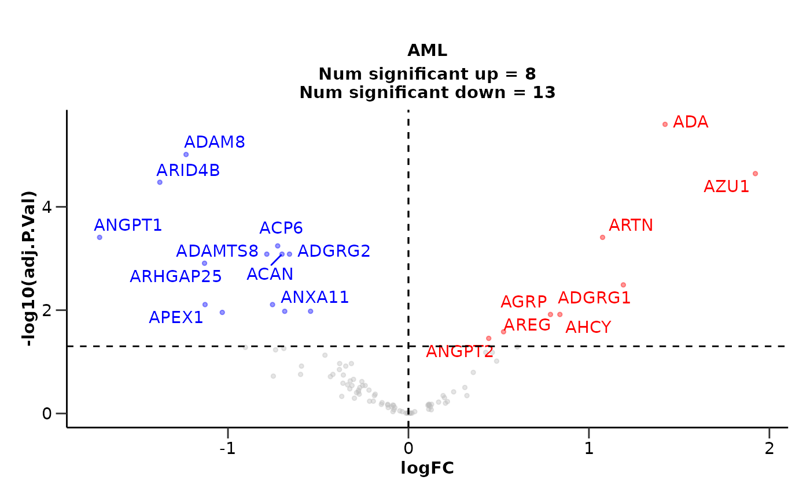
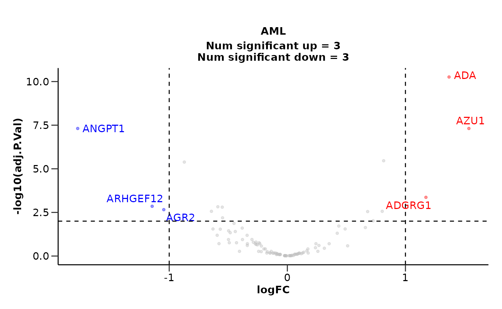
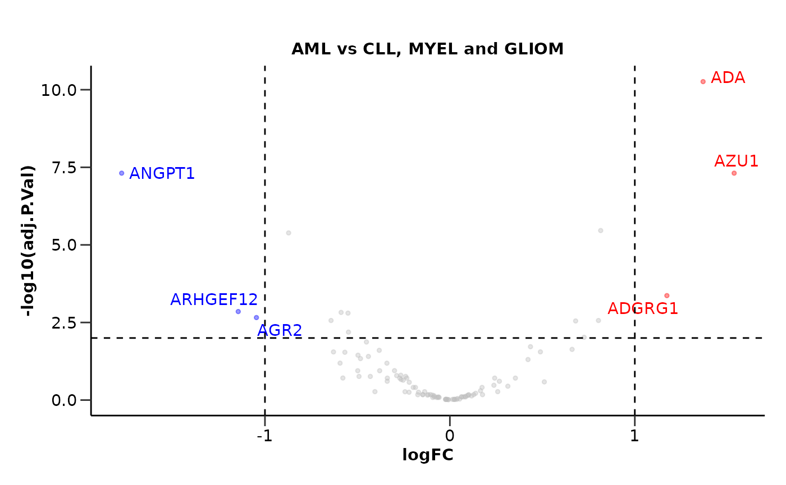
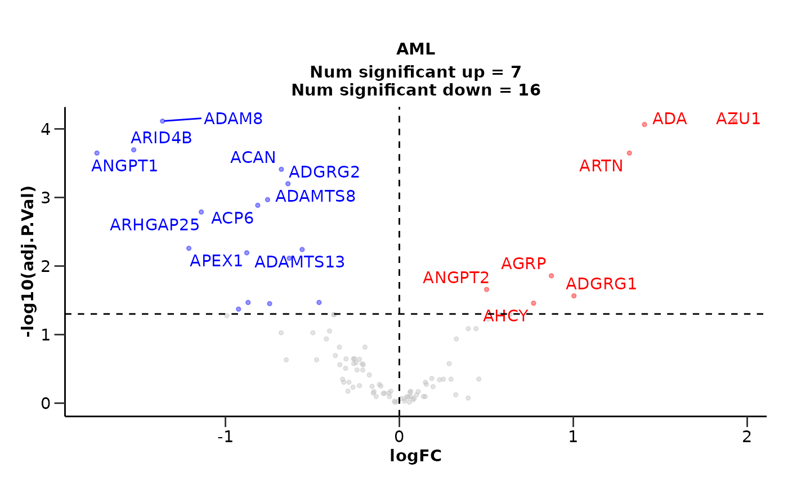
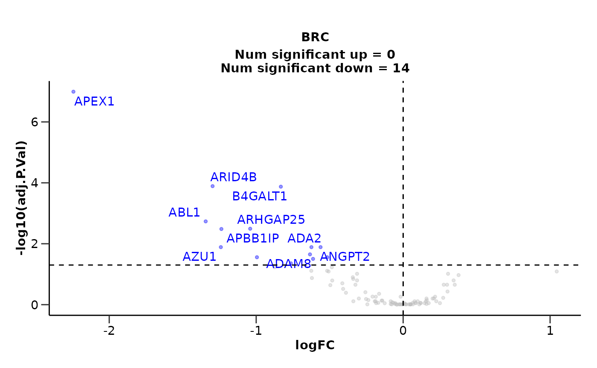
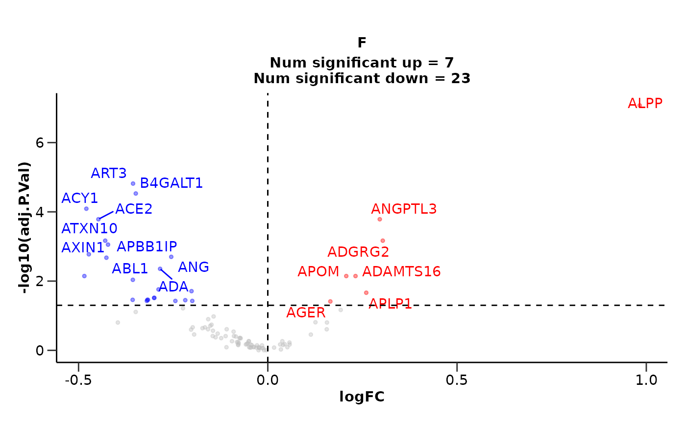
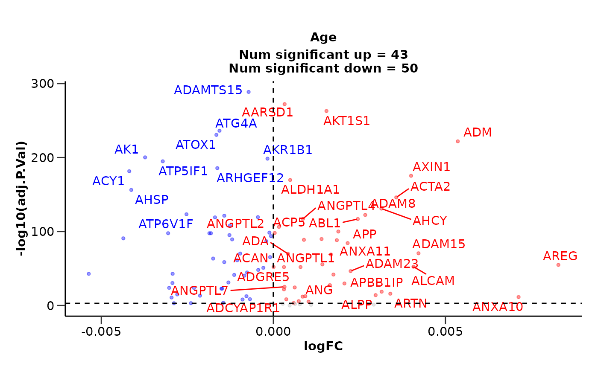

Differential Expression Analysis
Source:vignettes/differential_expression.Rmd
differential_expression.RmdThis vignette will guide you through the differential expression analysis of your data. We will load HDAnalyzeR and ggplot2, widen the data and load the metadata we are going to use.
library(HDAnalyzeR)
library(ggplot2)
wide_data <- widen_data(example_data)
metadata <- example_metadataWe will start by running a simple differential expression analysis
using the do_limma() function. In this function we have to
state the group that will be the case, as well as the control(s). We
will also keep the default correction for both Sex and
Age variables. We get the warning because the metadata are
not pre-filtered, but it is safe to ignore it in this case as it is
something that we do on purpose.
do_limma(wide_data, metadata, case = "AML", control = "CLL")
#> Comparing AML with CLL.
#> Warning in do_limma_de(join_data, variable, case, control, correct,
#> correct_type, : 488 rows were removed because they contain NAs in Disease or
#> Sex, Age!
#> $de_results
#> # A tibble: 100 × 11
#> Assay logFC CI.L CI.R AveExpr t P.Value adj.P.Val B Disease
#> <chr> <dbl> <dbl> <dbl> <dbl> <dbl> <dbl> <dbl> <dbl> <chr>
#> 1 ADA 1.42 0.955 1.89 1.56 6.04 2.53e-8 2.53e-6 8.73 AML
#> 2 ADAM8 -1.23 -1.67 -0.795 1.74 -5.59 1.94e-7 9.71e-6 6.76 AML
#> 3 AZU1 1.92 1.20 2.64 0.777 5.30 6.82e-7 2.27e-5 5.55 AML
#> 4 ARID4B -1.38 -1.91 -0.847 1.85 -5.15 1.34e-6 3.35e-5 4.91 AML
#> 5 ARTN 1.08 0.597 1.55 0.804 4.46 2.28e-5 3.90e-4 2.21 AML
#> 6 ANGPT1 -1.71 -2.47 -0.947 0.992 -4.45 2.34e-5 3.90e-4 2.20 AML
#> 7 ACP6 -0.725 -1.06 -0.390 1.20 -4.30 3.99e-5 5.70e-4 1.67 AML
#> 8 ACAN -0.701 -1.04 -0.364 0.556 -4.13 7.65e-5 8.24e-4 1.06 AML
#> 9 ADAMTS8 -0.785 -1.16 -0.406 0.239 -4.12 8.12e-5 8.24e-4 1.02 AML
#> 10 ADGRG2 -0.659 -0.977 -0.341 0.00861 -4.11 8.24e-5 8.24e-4 0.983 AML
#> # ℹ 90 more rows
#> # ℹ 1 more variable: sig <chr>
#>
#> $volcano_plot
We are able to state more control groups if we want to. We can also change the correction for the variables as well as both the p-value and logFC significance thresholds.
do_limma(wide_data,
metadata,
case = "AML",
control = c("CLL", "MYEL", "GLIOM"),
correct = "Sex",
pval_lim = 0.01,
logfc_lim = 1)
#> Comparing AML with CLL, MYEL, GLIOM.
#> Warning in do_limma_de(join_data, variable, case, control, correct,
#> correct_type, : 400 rows were removed because they contain NAs in Disease or
#> Sex!
#> $de_results
#> # A tibble: 100 × 11
#> Assay logFC CI.L CI.R AveExpr t P.Value adj.P.Val B Disease
#> <chr> <dbl> <dbl> <dbl> <dbl> <dbl> <dbl> <dbl> <dbl> <chr>
#> 1 ADA 1.37 1.02 1.72 1.26 7.76 5.48e-13 5.48e-11 19.0 AML
#> 2 ANGPT1 -1.77 -2.32 -1.23 1.46 -6.40 1.27e- 9 4.89e- 8 11.4 AML
#> 3 AZU1 1.54 1.06 2.01 0.592 6.36 1.47e- 9 4.89e- 8 11.3 AML
#> 4 ANGPT2 0.815 0.522 1.11 1.02 5.48 1.38e- 7 3.45e- 6 6.82 AML
#> 5 APP -0.872 -1.19 -0.553 1.05 -5.40 2.05e- 7 4.11e- 6 6.45 AML
#> 6 ADGRG1 1.17 0.637 1.71 1.86 4.32 2.59e- 5 4.31e- 4 1.83 AML
#> 7 ARHGEF12 -1.14 -1.71 -0.577 3.41 -3.98 9.84e- 5 1.41e- 3 0.537 AML
#> 8 AMY2B -0.588 -0.884 -0.293 0.250 -3.93 1.20e- 4 1.50e- 3 0.336 AML
#> 9 ACAN -0.551 -0.831 -0.271 0.617 -3.89 1.42e- 4 1.58e- 3 0.186 AML
#> 10 AGR2 -1.05 -1.59 -0.499 1.84 -3.78 2.20e- 4 2.20e- 3 -0.207 AML
#> # ℹ 90 more rows
#> # ℹ 1 more variable: sig <chr>
#>
#> $volcano_plot
We can customize the volcano plot further by adding a subtitle and removing the number of significant proteins. We can also remove the title via ggplot2 because now it seems to be redundant.
res <- do_limma(wide_data,
metadata,
case = "AML",
control = c("CLL", "MYEL", "GLIOM"),
correct = "Sex",
pval_lim = 0.01,
logfc_lim = 1,
report_nproteins = FALSE,
subtitle = "AML vs CLL, MYEL and GLIOM")
#> Comparing AML with CLL, MYEL, GLIOM.
#> Warning in do_limma_de(join_data, variable, case, control, correct,
#> correct_type, : 400 rows were removed because they contain NAs in Disease or
#> Sex!
res$volcano_plot + ggplot2::labs(title = NULL)
Let’s move to another method. We will use the do_ttest()
that performs a t-test for each protein. This function works in a
similar way with do_limma() but it cannot correct for other
variables like Sex and Age.
do_ttest(wide_data, metadata, case = "AML", control = "CLL")
#> $de_results
#> # A tibble: 100 × 6
#> Assay P.Value logFC Disease adj.P.Val sig
#> <chr> <dbl> <dbl> <chr> <dbl> <chr>
#> 1 ADAM8 0.00000107 -1.36 AML 0.0000769 significant down
#> 2 AZU1 0.00000154 1.93 AML 0.0000769 significant up
#> 3 ADA 0.00000259 1.41 AML 0.0000863 significant up
#> 4 ARID4B 0.00000809 -1.53 AML 0.000202 significant down
#> 5 ANGPT1 0.0000121 -1.74 AML 0.000225 significant down
#> 6 ARTN 0.0000135 1.32 AML 0.000225 significant up
#> 7 ACAN 0.0000272 -0.679 AML 0.000388 significant down
#> 8 ADGRG2 0.0000504 -0.641 AML 0.000630 significant down
#> 9 ADAMTS8 0.0000969 -0.758 AML 0.00108 significant down
#> 10 ACP6 0.000130 -0.814 AML 0.00130 significant down
#> # ℹ 90 more rows
#>
#> $volcano_plot
If we have diseases that are gender specific, we can specify them and
only their gender will be used in the analysis. This is also available
in the do_limma() function, but in that case we should not
forget to remove the Sex correction.
do_ttest(wide_data,
metadata,
case = "BRC",
control = c("AML", "CLL", "PRC"),
only_female = "BRC",
only_male = "PRC")
#> $de_results
#> # A tibble: 100 × 6
#> Assay P.Value logFC Disease adj.P.Val sig
#> <chr> <dbl> <dbl> <chr> <dbl> <chr>
#> 1 APEX1 0.00000000102 -2.24 BRC 0.000000102 significant down
#> 2 ARID4B 0.00000257 -1.30 BRC 0.000129 significant down
#> 3 B4GALT1 0.00000401 -0.832 BRC 0.000134 significant down
#> 4 ABL1 0.0000737 -1.34 BRC 0.00184 significant down
#> 5 ARHGAP25 0.000161 -1.04 BRC 0.00321 significant down
#> 6 APBB1IP 0.000197 -1.24 BRC 0.00328 significant down
#> 7 ADA2 0.00107 -0.624 BRC 0.0129 significant down
#> 8 ANGPT2 0.00104 -0.562 BRC 0.0129 significant down
#> 9 AZU1 0.00116 -1.24 BRC 0.0129 significant down
#> 10 ADAM8 0.00223 -0.634 BRC 0.0223 significant down
#> # ℹ 90 more rows
#>
#> $volcano_plot
We could run differential expression against another categorical
variable like Sex.
do_ttest(wide_data,
metadata,
variable = "Sex",
case = "F",
control = "M")
#> $de_results
#> # A tibble: 100 × 6
#> Assay P.Value logFC Sex adj.P.Val sig
#> <chr> <dbl> <dbl> <chr> <dbl> <chr>
#> 1 ALPP 8.42e-10 0.983 F 0.0000000842 significant up
#> 2 ART3 3.05e- 7 -0.356 F 0.0000152 significant down
#> 3 B4GALT1 8.86e- 7 -0.349 F 0.0000295 significant down
#> 4 ACY1 3.25e- 6 -0.479 F 0.0000812 significant down
#> 5 ACE2 9.82e- 6 -0.448 F 0.000164 significant down
#> 6 ANGPTL3 9.64e- 6 0.296 F 0.000164 significant up
#> 7 ADGRG2 5.02e- 5 0.304 F 0.000680 significant up
#> 8 ATXN10 5.44e- 5 -0.430 F 0.000680 significant down
#> 9 APBB1IP 7.95e- 5 -0.422 F 0.000884 significant down
#> 10 AXIN1 1.68e- 4 -0.473 F 0.00168 significant down
#> # ℹ 90 more rows
#>
#> $volcano_plot
Moreover, we can also perform Differential Expression Analysis
against a continuous variable such as Age via
do_limma_continuous(). We can also correct for categorical
and other continuous variables.
do_limma_continuous(wide_data,
metadata,
variable = "Age",
correct = "Sex",
pval_lim = 0.001)
#> $de_results
#> # A tibble: 100 × 9
#> Assay logFC as.factor.Sex.F as.factor.Sex.M AveExpr F P.Value
#> <chr> <dbl> <dbl> <dbl> <dbl> <dbl> <dbl>
#> 1 ADAMTS15 -0.000719 3.09 2.92 2.99 1874. 2.10e-291
#> 2 AARSD1 0.000327 2.96 3.25 3.13 1608. 1.29e-274
#> 3 AKT1S1 0.00154 3.28 3.46 3.47 1478. 3.54e-265
#> 4 ATG4A -0.00157 2.56 2.71 2.55 1138. 2.26e-238
#> 5 ATOX1 -0.00166 3.02 3.18 2.97 1061. 1.13e-232
#> 6 ADM 0.00536 1.53 1.47 1.87 954. 7.63e-224
#> 7 AK1 -0.00373 2.51 2.66 2.34 786. 3.94e-202
#> 8 AKR1B1 -0.000171 2.28 2.33 2.29 783. 2.64e-200
#> 9 ATP5IF1 -0.00321 3.66 4.02 3.60 740. 1.11e-196
#> 10 ARHGEF12 -0.00163 3.19 3.56 3.26 683. 2.06e-187
#> # ℹ 90 more rows
#> # ℹ 2 more variables: adj.P.Val <dbl>, sig <chr>
#>
#> $volcano_plot
#> Warning: ggrepel: 11 unlabeled data points (too many overlaps). Consider
#> increasing max.overlaps
As a last step, we can summarize the results via
plot_de_summary(). Let’s first run a differential
expression analysis for 4 different cases (1 vs 3).
res_aml <- do_limma(wide_data, metadata, case = "AML", control = c("CLL", "MYEL", "GLIOM"))
#> Comparing AML with CLL, MYEL, GLIOM.
#> Warning in do_limma_de(join_data, variable, case, control, correct,
#> correct_type, : 400 rows were removed because they contain NAs in Disease or
#> Sex, Age!
res_cll <- do_limma(wide_data, metadata, case = "CLL", control = c("AML", "MYEL", "GLIOM"))
#> Comparing CLL with AML, MYEL, GLIOM.
#> Warning in do_limma_de(join_data, variable, case, control, correct,
#> correct_type, : 400 rows were removed because they contain NAs in Disease or
#> Sex, Age!
res_myel <- do_limma(wide_data, metadata, case = "MYEL", control = c("AML", "CLL", "GLIOM"))
#> Comparing MYEL with AML, CLL, GLIOM.
#> Warning in do_limma_de(join_data, variable, case, control, correct,
#> correct_type, : 400 rows were removed because they contain NAs in Disease or
#> Sex, Age!
res_gliom <- do_limma(wide_data, metadata, case = "GLIOM", control = c("AML", "CLL", "MYEL"))
#> Comparing GLIOM with AML, CLL, MYEL.
#> Warning in do_limma_de(join_data, variable, case, control, correct,
#> correct_type, : 400 rows were removed because they contain NAs in Disease or
#> Sex, Age!
plot_de_summary(list("AML" = res_aml, "CLL" = res_cll, "MYEL" = res_myel, "GLIOM" = res_gliom),
disease_palette = "cancers12")
#> $AML
#> [1] "ADA" "AZU1" "ANGPT2" "ADGRG1" "APBB1IP" "AGRP" "ARTN"
#> [8] "ANGPTL4" "AHCY" "ATP6V1F" "ANGPTL2"
#>
#> $`AML&MYEL`
#> [1] "ADGRG1" "ARTN"
#>
#> $CLL
#> [1] "ARID4B" "ADAM8" "APEX1" "ARHGAP25" "ADAMTS8" "ADGRG2"
#> [7] "ADGRE2" "ALCAM" "B4GALT1" "ATF2" "AMFR" "ADGRE5"
#> [13] "ANXA11" "ABL1" "AARSD1" "ACAN" "ACP6" "ADAMTS13"
#> [19] "AMIGO2" "ADAM23" "ADAM15" "AGER"
#>
#> $`CLL&MYEL`
#> [1] "ACP6" "AGER"
#>
#> $MYEL
#> [1] "ADAMTS15" "ARTN" "ACTA2" "ATOX1" "AGER" "AIFM1"
#> [7] "AGR3" "APOH" "AREG" "ADAMTS16" "ANG" "ADA2"
#> [13] "AGRN" "ARSB" "ARSA" "ACP6" "ANXA4" "AGR2"
#> [19] "ATP5IF1" "APP" "ARHGEF12" "ACOX1" "ANXA3" "AK1"
#> [25] "AMN" "ADGRG1" "ADM" "AMBP"
#>
#> $GLIOM
#> [1] "ANGPTL7" "AGXT" "ACY1" "ACE2" "ALDH1A1" "AHSP" "AMY2B"
#> [8] "ACP5" "ART3" "APLP1" "ANGPT1"
#>
#> $AML
#> [1] "ANGPT1" "APP" "ARHGEF12" "AMY2B" "ACAN" "AGR2"
#> [7] "ATG4A" "ACP6" "ANGPTL7" "ADAMTS13" "ANXA3" "ANXA11"
#> [13] "AKT3" "AK1" "ANXA10"
#>
#> $CLL
#> [1] "AREG" "AZU1" "ACE2" "ARTN" "ACTA2"
#>
#> $`CLL&GLIOM`
#> [1] "ARTN"
#>
#> $MYEL
#> [1] "AHSP" "ATF2" "AXL"
#>
#> $GLIOM
#> [1] "ANGPT2" "APEX1" "AGER" "ADAMTS8" "ADGRG1" "ABL1"
#> [7] "ADGRE5" "APBB1IP" "ADGRE2" "ADA2" "ARID4B" "ADAM23"
#> [13] "ADAMTS15" "ADAM15" "ATOX1" "B4GALT1" "ARHGAP25" "ADAM8"
#> [19] "ANGPTL2" "ATXN10" "ARTN" "ADA" "ANGPTL4" "AGRP"
#> [25] "AMFR" "AMIGO2" "ADM" "ALCAM" "APOH" "ATP5IF1"
#> [31] "AGRN" "AIF1" "ATP6V1F" "AHCY" "ANG"
#> $de_barplot
#>
#> $upset_plot_up
#>
#> $upset_plot_down
#>
#> $proteins_df_up
#> # A tibble: 68 × 3
#> `Shared in` `up/down` Assay
#> <chr> <chr> <chr>
#> 1 CLL up AARSD1
#> 2 CLL up ABL1
#> 3 CLL up ACAN
#> 4 GLIOM up ACE2
#> 5 MYEL up ACOX1
#> 6 GLIOM up ACP5
#> 7 CLL&MYEL up ACP6
#> 8 MYEL up ACTA2
#> 9 GLIOM up ACY1
#> 10 AML up ADA
#> # ℹ 58 more rows
#>
#> $proteins_df_down
#> # A tibble: 57 × 3
#> `Shared in` `up/down` Assay
#> <chr> <chr> <chr>
#> 1 GLIOM up ABL1
#> 2 AML up ACAN
#> 3 CLL up ACE2
#> 4 AML up ACP6
#> 5 CLL up ACTA2
#> 6 GLIOM up ADA
#> 7 GLIOM up ADA2
#> 8 GLIOM up ADAM15
#> 9 GLIOM up ADAM23
#> 10 GLIOM up ADAM8
#> # ℹ 47 more rows
#>
#> $proteins_list_up
#> $proteins_list_up$AML
#> [1] "ADA" "AZU1" "ANGPT2" "ADGRG1" "APBB1IP" "AGRP" "ARTN"
#> [8] "ANGPTL4" "AHCY" "ATP6V1F" "ANGPTL2"
#>
#> $proteins_list_up$`AML&MYEL`
#> [1] "ADGRG1" "ARTN"
#>
#> $proteins_list_up$CLL
#> [1] "ARID4B" "ADAM8" "APEX1" "ARHGAP25" "ADAMTS8" "ADGRG2"
#> [7] "ADGRE2" "ALCAM" "B4GALT1" "ATF2" "AMFR" "ADGRE5"
#> [13] "ANXA11" "ABL1" "AARSD1" "ACAN" "ACP6" "ADAMTS13"
#> [19] "AMIGO2" "ADAM23" "ADAM15" "AGER"
#>
#> $proteins_list_up$`CLL&MYEL`
#> [1] "ACP6" "AGER"
#>
#> $proteins_list_up$MYEL
#> [1] "ADAMTS15" "ARTN" "ACTA2" "ATOX1" "AGER" "AIFM1"
#> [7] "AGR3" "APOH" "AREG" "ADAMTS16" "ANG" "ADA2"
#> [13] "AGRN" "ARSB" "ARSA" "ACP6" "ANXA4" "AGR2"
#> [19] "ATP5IF1" "APP" "ARHGEF12" "ACOX1" "ANXA3" "AK1"
#> [25] "AMN" "ADGRG1" "ADM" "AMBP"
#>
#> $proteins_list_up$GLIOM
#> [1] "ANGPTL7" "AGXT" "ACY1" "ACE2" "ALDH1A1" "AHSP" "AMY2B"
#> [8] "ACP5" "ART3" "APLP1" "ANGPT1"
#>
#>
#> $proteins_list_down
#> $proteins_list_down$AML
#> [1] "ANGPT1" "APP" "ARHGEF12" "AMY2B" "ACAN" "AGR2"
#> [7] "ATG4A" "ACP6" "ANGPTL7" "ADAMTS13" "ANXA3" "ANXA11"
#> [13] "AKT3" "AK1" "ANXA10"
#>
#> $proteins_list_down$CLL
#> [1] "AREG" "AZU1" "ACE2" "ARTN" "ACTA2"
#>
#> $proteins_list_down$`CLL&GLIOM`
#> [1] "ARTN"
#>
#> $proteins_list_down$MYEL
#> [1] "AHSP" "ATF2" "AXL"
#>
#> $proteins_list_down$GLIOM
#> [1] "ANGPT2" "APEX1" "AGER" "ADAMTS8" "ADGRG1" "ABL1"
#> [7] "ADGRE5" "APBB1IP" "ADGRE2" "ADA2" "ARID4B" "ADAM23"
#> [13] "ADAMTS15" "ADAM15" "ATOX1" "B4GALT1" "ARHGAP25" "ADAM8"
#> [19] "ANGPTL2" "ATXN10" "ARTN" "ADA" "ANGPTL4" "AGRP"
#> [25] "AMFR" "AMIGO2" "ADM" "ALCAM" "APOH" "ATP5IF1"
#> [31] "AGRN" "AIF1" "ATP6V1F" "AHCY" "ANG"